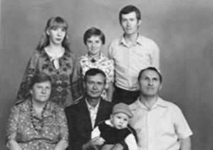
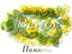
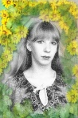

СВЕТЛАНА ЦЫБИНА
КОЛОКОЛЬНОЕ СЛОВО
СТИХОТВОРЕНИЯ
к оглавлению
Вступление в книгу
Главное свойство лирической поэзии - исповедальность. Многообразие адресатов, объединенных заветной мыслью, суть полнозвучия. Монолог, диалог, рассказ и созерцание - формы лирической исповеди. Любовь к человеку, земле, Богу -
вечные темы, явно или тайно* существующие в классических стихах. Когда обращаются не к действительно живым - воспевают соблазны, насилие, одним словом, гордыню - населяют мир фантасмагорией, служат управлению лжи. Кровавые жертвоприношения, казни, гладиаторские бои, войны и революции, оргии всеобщего самодовольства и позорища самовластья, все что способствует обильному выделению желудочного сока, одурманиванию, всяческому разврату, безнаказанности преступлений - вот что спокон веков ценилось на миру-пиру золотого тельца. В трудной, бедной жизни - дорожат радостью святых праздников, чудом любви, природы, искусства, пророчества. Поэт, библейский пророк, призванный "глаголом жечь сердца людей", одаряет и живой водой истинного слова - им можно утолить жажду, очиститься, омыться, насытиться, им можно дышать и жить. Обычно век поэтов недолог - они побиваются камнями или просто физически не выдерживают противостояния бездне зла (той же пошлости), но их слово будит от дурного сна бессмертным колокольным зовом; бывает, они остаются безвестны, но их слово просветляет и согревает благой вестью в самые темные и жестокие эпохи - пусть только горсточку близких людей.
Такова поэзия и судьба Светланы Львовны Цыбиной. Созданные во времена рассеяния и прошедшие "путем зерна" - ее стихотворения возрождают наше бытие колокольным словом:
Закат в полнеба - колокол
В полкупола гремящ...
............................
Все с ним в себе не сладишься,
Чего-то не добрав.
Расправишься, разгладишься
Для всякого добра.
Откроется высокое -
Люби-перелюби...
.............................
В двадцатом столетии на генеалогическом древе русской поэзии взошло само - цветное созвездие лирики Ксении Некрасовой, Марии Петровых, Ольги Берггольц и Ирины Снеговой (от тютчевской и лермонтовской, блоковской и хлебниковской веток).
В ней нас ожидают любовные откровения-признания, и все-таки большинство их текстов посвящено красоте и судьбе Родины, ее языка. Вероятно в этом сказалась воля времени.
В 80-х в духовном содружестве прибавилась молодая звездочка Светланы Цыбиной (с края, ближайшего к одиноко пылающей звезде Марины Цветаевой):
Мария
Белого шелка,
Марина
Черного моря,
Маруся
Красной калины -
Я - белая Лана
......................
В мире фанфарном.
Илья Александр 2007
* - Как это было в СССР воинствующего атеизма.
ЭЛЕГИЯ ПАМЯТИ СВЕТЛАНЫ ЦЫБИНОЙ
родившейся 1 февраля 1957 года
и ушедшей от нас 7 июня 1984 г.
Я помню тебя
как ты пришла в наш старый сад июньским утром
с солнечной нежностью листьев пением гуденьем поцвиркиванием
сиянием цветов
я помню отеческую улыбку Бештау в голубой бездне пред нами
сидевшими на лавочке под окнами моего дома
когда ты рассказывала о себе
я помню тебя
маленькой девочкой на бугристых руках отца-победителя
как он носил тебя по комнате а ты что-то ему напевая
гладила его шрамы на руках плечах и голове
я думаю если бы они встретились с моим отцом
им было бы о чем поговорить - двум "богам войны"
я помню тебя
плененною красками и звуками наяву и во сне
(еще более звонкими и яркими) когда ты узнала
что кисти и карандаш тебе родные
ты творила миры
мурлыкая райские песенки которые не записать
чувствуя себя на отцовых руках незримых для других
подрастая под присказку взрослых: "золотая голова..." *
я помню тебя
мятущейся в рабоче-крестьянском раю 70-х
когда уже третье поколение коммунистов
носилось с трупом хлебниковской Свободы
убитой их дедами
водрузивши на шест с перекладиной своей веры
воздух был пропитан тяжким духом ее разложения
ты сбегала из училища домой из дома - в брак из брака -
в одиночество улиц
как большинству из нас тебе некому было ввести противоядие
от подлости властей и лицемерной зависти общежития -
со школьной скамьи живые души попадали в ад изгойства
я помню тебя
с головой ушедшей в спасительное творчество
твои рисунки с лучистой штриховкой от диккенсова фонаря
омывающего дом на холме утопающий в саду
лица и автопортреты с эхнатоновой линией (Модильяни)
позднее застолье в английском парке где были
твои новые друзья и подруги из кисловодской поэтической студии
"Голос" и ваш учитель **
и все знаменитые и таинственные личности посетившие Ессентуки
(и мы там были с тобой)
я помню тебя
по прошествии лет рядом с другом - художником
летящей свободной птицей зеленой улицей вспыхивая смехом
шелеста листьев
встряхивая копной овсяных волос
навстречу солнцу
потом в гостях я увидел двух ваших малышей-подсолнушков
и твои новые работы маслом - все время грезившийся дом
в тенистом саду
и воплощенья в образах близких тебе: то молодого Рембрандта - гуляки
поля у шляпы лихо заломив пером украшенной (как в том автопортрете),
то Рафаэля вежества во сне небесном жившего на свете
мадонной ласковой сама вступая в мир
я помню тебя
читающей новые стихи - с новым потопом
с явлением рериховских мудрецов
с драгоценными земными плодами с двойником дождя
грозным диалогом Земли
с колокольным словом исповеди обезъязыченного народа
с Девой Марией с веками в сетях инквизиции
с неандертальцем-Авелем
с цветаевским подарком-городом и последние - с белым грудным звуком
вольными ритмами эпической интонацией
о жизни души
я помню тебя
в то июньское утро когда вдруг приподнявшись с постели
ты обняла меня - уже легкая как перышко
семя-крылышко парящее в потоке -
и сказала лиственным шепотом :
"Отпускаю..."
я помню тебя...
Ил. Ал. 1990-е
* - Из стихотворения Светланы Львовны Цыбиной.
** - Создатель в Кисловодске литературной студии "Голос" - Станислав Яковлевич Подольский, поэт и прозаик.
ЧАСТЬ I
Мимо вечер плывет
К теневой западне,
И меня застает
В освещенном окне.
Я - его астроном
С телескопами рифм,
Он - стихов метроном,
Созидающий ритм.
Стекал со стекол,
Спадал со стен,
У верхних окон
Еще блестел,
Блеснул - и замер
Зари ручей.
Огни с глазами
По сто свечей
Пронзили воздух
То врозь, то в ряд -
Земные звезды,
Ночной парад.
Вверху как Слово
Из млечных лет,
Бледней земного,
Небесный свет.
В грустном сердце обнови
И испуг, и радость встречи,
И бессмысленные речи,
И признания в любви.
Все испытано давно:
Тяжкий вздох, косые взгляды,
Обновленные наряды
И объятия в кино.
Там, где прошлое прошло,
Было, помнится, другое:
Бесконечно-дорогое
Мне лицо твое цвело.
Барабанной дробью резко
Грянул ливень, как сорвался
Из прорыва в черном небе,
Триста лет прождавши там.
Все дороги в раз отрезал!
"Ну и дождик нам достался -
Триста лет таким он не был,
Не потоп ли Бог послал?!"
1.
Орехом пахнет. Музыка играет.
Стемнело, а на улицах светло.
Курортный город все не замирает,
Хоть небольшой, а все же не село.
2.
Наш город подобен огромному парку,
Машины шуршат по асфальту аллей,
Смыкаются веток прозрачные арки,
И каждая улица, словно туннель.
Задорно, упорно работает город,
Не мысля словить ничего без труда.
Здесь много рвачей, спекулянтов и воров,
На каждом углу - и вино, и вода.
Слова подбросил ветер,
И дождь по ним прошел,
И полдень их заметил,
А холод - обошел.
Ты их случайно встретил,
Потом ко мне пришел,
Произнести наметил,
Да нужным не нашел.
Я вышла в непогоду,
В день пляшущих ветров,
В единственный из года
День перелета слов.
И в небе без просветов
Накапливался гул
Несказанных ответов,
Слов, не сошедших с губ.
И распахнулись тучи,
И дождь заголосил,
И строй ветров летучий
Слова произносил,
Что ты когда-то встретил,
Запомнил, в дом пришел -
И не сказал. Наметил,
Да нужным не нашел.
Говорили мне слова:
- "Золотая голова"!
Золотые мысли ты
Из словесной льешь руды. -
Это было так давно...
Было все тогда дано.
Полтора десятка зим,
Пять пальтишек износив,
Повторяла я слова:
"Золотая голова"!
Это было так давно...
Было все тогда дано.
Проживаю как во сне,
Не дают покоя мне
Те липучие слова:
"Золотая голова".
Это было так давно...
Было все тогда дано.
Слезы бессилия жгут,
Давит удушливый жгут,
Плавится в небе закат,
Правится стих невпопад,
Искры летят без огня,
Небо горит без меня!
В облаке звуков и слов
Я, как паук-мухолов.
Не залетит никогда
В сеть паутины звезда...
Каждая звездная нить
Знает, куда ей светить,
Каждое птичье крыло
Знает свое ремесло,
Знает, когда догорит
Пламя вечерней зари,
Знает, откуда начнет
Новое утро восход.
Если я жизнь пережду,
Зернами не упаду,
Землю ростком не взорву -
Чем я потом оживу?
Пылью укромных углов...
Новой семьей пауков.
Из тетради ночной вырывая страницы,
Чтоб дневную тетрадь хоть на миг удлинить,
Я успею состариться и завершиться,
Но боюсь, что могу не успеть - совершить.
Если б звуки слетали ко мне с небосклона,
Если б слоги вбегали, срывая замки,
Я бы все уместила - от звезд до протонов -
Для друзей и потомков в четыре строки.
Для тебя, без которого мне безвоздушно,
И куда бы ни выплыть, не будет светло,
Я бы спела, как птица, а ты бы послушал
И, как птица, ответил, качая крылом.
В устремленности общей - от сева до жатвы,
По стерне, через тернии, сквозь темноту -
Мне не страшно сгореть и фанфар не дождаться.
Страшно только отстать на проезжем мосту.
И когда за окном те же самые окна,
И от них, и от звезд - одинаковый свет,
Вижу я, как рождается день на далеком
Горизонте невиданных будущих лет.
За целый день меня ничто не потрясло,
Не удивило и не взволновало.
Я шла по улице, и было ни тепло,
Ни жарко и ни холодно нимало.
Я не увидела знакомого лица
И не заметила, когда стемнело.
И так дошла до самого конца,
До самого последнего предела.
И дома вечером, привычно сев за стол,
Я не могла притронуться к тетради.
А за окном осенний дождик шел,
Баюкал слух, как будто душу гладил.
Вдруг я решила, что пора идти,
Что пустота меня совсем поглотит,
Мне показалось, я должна найти
Того, кто в темноте по лужам бродит.
Я вышла из дому на мокрое крыльцо -
В такое время в дождь кого тут встретишь?
Холодных капель сотня моросит в лицо,
Со всех сторон летит студеный ветер.
Котенок черный пересек мне путь,
Худющий, мокрый, никому не нужный.
Вот перекресток. Я должна свернуть.
Совсем темно, но я иду послушно.
Через листву лишь изредка проходит свет
На тротуар от фонарей с дороги.
И ни одной живой души в помине нет,
И чуть не до колен промокли ноги.
Что мне почудилось? Кто здесь ходил?
Какие мысли в голове теснились?
И может, он меня не находил,
И мы навек случайно разлучились?
Я повернула к дому. Дождь стекает с век,
И пустота смывается, проходит...
А, может, это я - тот самый человек,
Что в непогодь во тьме по лужам бродит?..
В кругу друзей
Восходят звезды
И солнца ждут,
И вянут...
А если бы они
Стремились к ночи,
Горели бы холодным светом.
Голоса -
Говоры громкие.
Голов
Гордые ряды.
Впереди
Парадов дым.
Грянет зов.
Звякнет цепь.
Стихнет,
Шарахнется прочь.
На засов...
На замок...
До зари...
Будет сладко и будет солоно,
Будет радость не нарисована.
Будет горе - горькое, длинное,
Будет ясно - солнышко дивное.
Будет грусть на губах затоена,
На затоеном - песня настояна.
Будет слово и сладко, и солоно,
Будет сердце исполосовано.
Будем капли хватать,
Будет капать строка,
Будем жизнь коротать,
Будет жизнь коротка.
Идти домой - темным-темно,
Сейчас об этом думать страшно,
Смотреть на темноту в окно
И убеждать себя напрасно,
Что этот вечер может лишь
Навеять сны и успокоить,
И приласкать... Но тень и тишь
От глаз людских всегда укроют
Кого-нибудь, кто хочет скрыть
Свои проклятые пороки...
Но, Господи, не может быть,
Чтоб мне попался по дороге
Такой ужасный человек -
Вот вздор! Но если думать трезво,
Где потемней - довольно резво
Придется мне пойти. Наш век
Еще далек от совершенства,
Хоть мы к нему на пол-пути:
Мне от стихов - не до блаженства,
А до подъезда бы дойти.
Успокой, прохладный вечер!
Коль не сможешь, кто ж еще
От сырой тоски излечит,
Растолкав меня в плечо?
Ты всегда мне был подмогой,
Лишь с тобой наедине
Оживаю понемногу
На скамейке при луне.
И плывет в твоих минутах,
В голубом луче луны
Длинный отблеск прошлых суток
По пути в ночные сны.
Я смотрю теперь с улыбкой
На свою же суету,
Что была сплошной ошибкой,
Словно оклик в пустоту.
Что же делать, если нечем
Залатать прорехи дня.
Только ты, спокойный вечер,
Утешенье для меня.
Я могу с тобой делиться
И весельем, и тоской.
Жаль, что не с кем веселиться,
Одиноки мы с тобой.
Не грусти, твоя прохлада
Дорога не только мне.
Чьи-нибудь сольются взгляды
На скамейке при луне.
ЧАСТЬ II
Твой голос не являлся из пространства,
И если в сферах он существовал
Поблизости, - меня не вызывал
И не крушил земного постоянства.
По сути, мы друг друга пеленаем,
Но иногда сквозь нашу пелену
Мы чувствуем то краску, то струну -
Из ничего - и тут же забываем.
И ты по-прежнему реален, точен,
А я стараюсь управлять собой...
Но аура горит над головой,
И звезды что-то напевают ночью.
Отчего так стремительно сердце стучит,
Отчего и тревожно, и жарко?
Чувства заняты, разум покуда молчит -
Как назвать это жгучее зарево?
Эти встречи бывают из тысяч - одна!
Что-то кончилось, что-то начнется.
Две планеты приблизились так, что видна
Камышинка, когда покачнется.
Старых мыслей задвигалось веретено,
Застучал молоточками опыт -
Но на это сверхновое полотно
Никакой ярлык не приштопать!
На каких энергиях мы горим
Без особого шума и дыма?
Познакомились, встретились, говорим -
А меня печет нестерпимо.
А меня обливает струей огня,
А меня выбивает из контура -
Отчего ты так действуешь на меня,
Что свершается? Чем это кончится?
Пойми, пойми, пойми,
Ты мне не просто друг!
Как только рядом мы,
Все валится из рук.
И кисть дрожит в руке,
И странный блеск в глазах,
Как будто на цветке
Прозрачная роса.
Твой голос, как у всех,
И все ж он только твой.
И я не я, когда
Ты говоришь со мной.
Где белые тюльпаны
И черные тюльпаны?
Лишь алые тюльпаны
Пьют воду в нашем доме.
Мы видим только эти,
Нам снятся в алом свете
Прекрасные мадонны
И маленькие дети.
И книги с чудесами
Приходят в руки сами,
В красивых переплетах,
С хорошими концами.
Подслушивают это
И чаши раскрывают
Тюльпаны в белой вазе,
Тюльпаны в алом цвете.
Спи, малыш, я здесь, я рядом,
Заслоню тебя крылом
И накрою звездопадом
Светлых сказок спящий дом.
Волк, лиса и бурый мишка
Спят уже в лесу своем,
Спи и ты, родной сынишка,
Беззаботным тихим сном.
Расскажу тебе о птице,
Что поет в саду весной,
Только ты прикрой ресницы,
Спи спокойно - я с тобой.
Летним днем над полем мчится
Голубая стрекоза -
Пусть она тебе приснится,
Спи, малыш, закрой глаза.
Ты увидишь золотистый,
Яркий осени наряд;
Будет сон цветной, лучистый,
Спи, мой милый, рядом я.
На снегу блестит дорожка,
Освещенная луной...
Ты уснул. А я немножко
Посижу еще с тобой.
Тихий вечер, светлый вечер,
Засыпает детвора,
Зажигает вечер свечи,
Свечи-звезды до утра.
Закрывают дети глазки,
Затихает шум машин,
И на землю сходят сказки
Из-за облачных вершин.
Разговаривают звери,
Под луной поет Орфей...
По ночам открыты двери
Для волшебников и фей.
Допускают меня как равную
Мудрецы к своему труду.
Открывают палату правую -
И по солнечным дням ведут.
Открывают палату левую -
И ведут по лунным ночам.
Черным волосом крылья белые
Пришивают к моим плечам.
И взлетаю я, окрыленная,
Впредь снегов на семи ветрах.
Провожают меня поклонами
Мудрецы с цветами в руках.
Заиграют ли струны-молнии,
В барабаны ударит гром -
В тучи черные, мраком полные,
Белым выпростаюсь лучом!
Ярче молнии слово молвлено,
Мгла крылатая озарена!
Что мне бурею приготовлено?
Что я буре отдать должна?
И меня мудрецы небесные,
Через бурю направя вброд,
Не затем ли пугали бездною,
Чтоб случилось наоборот?
1983 г.
В долине Голубой реки
Под золотым закатным небом
Сидели кругом старики,
Перебирая быль и небыль.
Дарил костер тепло и свет.
Огонь лизал сухие ветки,
Алел и цвел, как маков цвет.
В нем тайны старины заветной...
Еще шумит густая зелень,
Еще щедра теплом земля,
Не все в садах плоды поспели,
Идут работы на полях...
Но день давно короче ночи.
Уже не так листва блестит,
И все вокруг теряет прочность,
Нельзя вернуть, нельзя спасти...
Есть в сентябре и красота, и тонкость,
И лета уходящего печаль,
Есть искренность наивного ребенка,
Таинственности вечная печать.
Есть под ногами желтый хрупкий ворох,
Есть синие просветы в облаках,
Есть шум дождей и ветра громкий шорох,
Есть к непогоде огненный закат.
Есть золотом сияющие клены,
Есть ржавчины коричневатый цвет,
В лиловости туманов есть - зеленый,
И только одинаковости нет...
Идешь по тротуару ранней осенью
И видишь вдруг в траве каштанов пятна,
Они блестят, как лаковые росписи,
Притягивают сильно, непонятно.
Не зря их собирают с наслаждением
И маленькие дети и подростки -
Они влекут к себе, как наваждение,
Коричневые, ласковые блестки.
Потрогаешь их кожуру упругую,
Почувствуешь их глянцевую прочность
И нежность шелковистую, округлую,
Всех вмятин и неправильностей точность...
И пожалеешь, что они разбросаны:
Ведь мы привыкли - все плоды - в корзины.
Но для природы, для земли, для осени
Они бесценны и необходимы.
Барабанит с утра по карнизам
Серебро проливного дождя.
Осень долго скрывала капризы,
Желтизной по деревьям водя.
Расточала щедроты и ласки,
Устилала плодами сады,
Только теплые делала краски,
Только радость брала за труды.
Но в душе ее больно и рьяно
Шевелилась колючка тоски.
Над закатом лилово-багряным
Облаков заалелись клочки.
Появились холодные ветры
И задули горячку зари,
Не оставили звездам просветов,
Чтоб мерцали во мгле фонари.
И посыпалось, и замелькало
Серебро проливного дождя.
Осень долго капризы скрывала,
Отживающий день золотя.
Пентаптих
1.
Закат в полнеба - колокол
В полкупола гремящ,
Хоть и замри, как вкопанный,
Хоть и глаза таращ -
Все с ним в себе не сладишься,
Чего-то не добрав.
Расправишься, разгладишься
Для всякого добра.
Откроется высокое -
Люби-перелюби -
Погреешь сердце около
Космической любви.
Но в стаде прелой падали
Тебя перегноят:
"Чего стоял, подглядывал,
Последний, что ль, закат..."
2.
Под Муз наряженные девы
Обслуживают ложных мэтров,
И глаз идейно-обалделый
Глядит с плакатов и портретов.
И самый злой из режиссеров
Про справедливость ставит пьесы,
И рой бесстрашных дирижеров
Руководит смычками прессы.
И процветает новых званий
Со старой алчностью элита,
А имена "Маруся", "Ваня"
Заменены, но не изжиты.
3.
В толпу, которая скользила
По размазне гуляний пьяных,
От нас презрением разило
И медным духом из карманов.
Мы вышли, чтобы размешаться,
Мы растворились, чтобы выжить.
Откуда пенью начинаться,
Какой нектар из гнили выжать?
Твои таланты - не заслуга,
Здесь, на миру, другие цены.
Мы демонстрируем друг друга,
Как будто город - наша сцена.
Но друг для друга мы - кумиры,
И меценаты, и злодеи,
И целый мир, и больше мира -
С одним началом две идеи.
Нам Космос посылает звуки,
Нас Вечность лечит от бессилья,
А те, кто рядом - тянут руки
И рвут младенческие крылья.
4.
Не из облака - хоть из норки
Посмотри в надземную явь.
Или вовсе - от горки до горки
По-кротиному перебуравь.
Из-под старой листвы, пропавшей
В перегнойной черной траве,
Пробурившись и пропахавшись,
Посмотри - помоги себе.
Пересиль кротиность подземную,
Иерархию сверху вниз.
Выдь из норки, увидь Вселенную -
Не до смерти же землю грызть!
Переезжена, переметана,
Перекроена вширь и вглубь -
Не земля, а шлак отработанный,
Дом, построенный как-нибудь.
По весне вспахали, засеяли,
И по осени - до снегов.
Если б только, беря, лелеяли
Невозвратный нежный покров.
Если б только крошили, жарили,
Лишь бы сытно свое прожить...
Но ощерили, но направили
Смертно-ядерные ножи.
Подземельный, рытвинный, адовый,
Ты и в Космосе - тот же крот:
Все награбленное откладываешь
В арсеналов железный грот.
Ты бы мог воспарить в карьеры
Галактических звездных шахт...
Ты бы мог из ползущих - первым
Сделать первый в Бессмертье шаг.
5.
Праздник
Идет волна
На меня
Красная с белым,
С гребнем фанфарным.
А я - нырну
Под нее,
Красную с белым,
С гребнем фанфарным.
Сама - петух -
Фанфарон
С гребнем цветастым,
Или бесцветным...
Но только не
На волне
Красной и белой
С гребнем фанфарным.
В косынке красной,
В рубахе белой;
В пустыне снежной
С небом кровавым -
Но только не
С гребнем
Красным и белым
В море фанфарном.
Мария
Белого шелка,
Марина
Черного моря,
Маруся
Красной калины -
Я - белая Лана
Черного круга,
Красного грота,
Лун и подделок
В мире фанфарном.
10 ноября 1983г.
"Джордано Бруно? В костер его!!!"
Костер пылает прожорливо!
Толпа пугливая, стадная...
Рука в перстнях беспощадная.
В толпе живые и смертные...
Мелькают мысли запретные,
Юнцы с преступными лицами
Глядят в костер инквизиции...
А там гудит устрашающе
Огонь, людей пожирающий,
Огонь - кровавое зарево.
Под рясой шепот: "Поджарь его!"
Под рясой крест позолоченный,
На нем Исус опороченный,
Над ним в устах - лицемерие,
В глазах - в Исуса неверие...
Предсмертных мук сновидения.
Расцвет в садах Возрождения.
Мадонна с веками влажными,
Ландшафты с горными кряжами.
Италия... Мысль крылатая
Горит, на столбах распятая.
Сошлись полюса истории
У храма на Капитолии.
Деревьями доисторические птеродактили
Застыли, чернея скелетами ломких агоний.
Одни, отбиваясь от Вечности, зубы утратили,
Другие - утратили крылья за эрой в погоне.
Одни - в меловой небосвод негативы впечатали,
Другие - застряли в горниле крестовых походов...
И гром самолета, и шумный подъем птеродактиля
Почудятся неандертальцу во время охоты.
- Идешь?
- Иду.
- Куда?
- Вперед.
- Ну-ну, иди...
- Не понимаю.
- Смешной!
Тебя так близко ждет
Конец.
- Ты знаешь?
- Твердо знаю.
- Но я - живу!
- Живи.
- Дышу!
- Дыши.
- Я плаваю, летаю,
Я - создаю!
- Ты создаешь
Конец.
- Ты знаешь?
- Твердо знаю.
- Не может быть!
- Уверен?
- Да!
- "Блажен..."
- Туманно.
- Поясняю:
Ты разрушитель.
- Ерунда!!!
- Прощай.
- Прости...
- Я - не прощаю.
Зеленым воском лист облитый,
Неона безразличный свет,
Дождей сырая волокита,
Лучей восточный марафет.
Сознание железной власти,
Грусть одинокого крыла,
Любви рассыпчатые сласти,
Потерь застывшая смола.
Короткий сон в тени сомнений,
Пристрастность вычурных идей,
Привычка поздних поколений
Хранить останки крепостей.
Покой в груди, где дух расправлен,
Где философия, как мох,
И каждый камень обезглавлен,
И каждый идол - это бог.
Но мрачным душам нет награды,
Сатурн и Марс трубят, сойдясь,
И дней испуганное стадо
Пылит, мыча и торопясь.
ЧАСТЬ III
Кухня - замкнутый контур.
Круг идей и лир хор
Тоже здесь.
И свет с гор,
И цветы, и торжественный пурпур...
Этот безвыходный лабиринт
Слабостей не прощает.
Здесь Музы поют
И в прятки играют,
Заводят флирт...
Здесь лабиринт в лабиринте -
Моя душа не вольна,
Космически обречена
Ходить и ходить по своей орбите.
Здесь, в центре всех символов бытия -
От пуговицы до знака Вечности -
Пульсирует несоразмерное Я.
1.
Я сына, лаская,
Боюсь изнежить.
Ругая его, боюсь изранить.
Любя - ничего не боюсь.
2.
Всю кухню заполнили муравьи.
Я их защищала, теперь - убиваю,
Но их по-прежнему жалко.
3.
Можно придумать бессмертие,
Сидя на табуретке.
О космосе можно поразмыслить.
4.
К вечеру похолодало,
Как бы сына не простудить.
Ветер не был отцом
И сырость матерью не была.
Пора нам домой.
5.
Дух двуликий. Круглый. Длинный.
Страшно. Сон не уходит.
6.
Рядом с газовой горелкой
Бабочка упала.
Две огненные точки
Горели вместо глаз.
Огонь погас - и точки вместе с ним.
Усталость,
как туба,
Гудит,
гудит...
Как дымно,
как трудно
Душа
чадит.
С последним
усильем
Летит,
вопя,
И
невыносимо
Болит,
летя.
Мой выдох,
мой голод
Не
заглуши,
Усталость,
как полог,
Как ночь
души.
Мой праздник,
усталость,
Начни
щадить!
Как мало
осталось
Любить
и жить.
Я без тебя, как пена,
Которая опадает.
Мир до последнего гена
В клетках моих замирает.
Мир, как застывший кратер -
Чаша золы в атмосфере.
Где мой межзвездный катер -
Где Надежда и Вера.
Я без тебя, как ветер,
Отнятый у мирозданья.
Вихрей спиральный вертел
Вертит мое сознанье.
В черные дыры - омуты
Нежность моя сочится,
Верность в маленькой комнате
Меж притяжений мчится.
Где тепла излучение,
Где заботы сияние,
Взглядов твоих свечение,
Рук твоих прикасание?
Я без тебя - планета
Без кругового движения.
Ты - мое солнце. Где ты?
Жду твоего притяжения.
Мираж, как город в белом дыму,
И город, как белый мираж пустынь;
Какой-то город, какой-то дым
Проспектов белых (Голубизну,
И голубиных перьев порх,
И синь, и воздух до этих пор
Вижу не сном, не духом-сном)...
До этих пор я - в городе том.
Я не живу не там! А здесь
(Среди непамятных этих мест)
Я знаю: город - и горд, и чист,
Как белых стай перелетный свист.
Он - сизость дыма, он - крыльев мах;
Водопроводом в его домах
Я предназначена быть и течь,
Я предначертана - в лампах жечь,
На остановках, на тротуарах,
На перекрестках ждать и дышать
Воздухом, светом, дымом, угаром;
В крышах - антенить, в улицах - гнать
С присвистом! Город - Всеград - воскреснь!
Я - горожанка - помнишь? - я есмь.
В сером небе раздумия голос.
Прилетает оттуда синица.
Оперением к волосу волос
Дорожит круглобокая птица.
Синих перьев она не роняет,
Белых перьев она не теряет.
Прилетает ко мне - голубая,
Возвращается в небо - любая.
Возможно, мне не стоит есть лимоны,
Возможно, стоит мне на них смотреть.
Округлый, небольшой, желто-зеленый,
В нем кислота и витамины есть.
Но на столе, на темной полировке
Сейчас он - выразительный пример,
Как флора после долгой тренировки
Нашла и цвет, и форму, и размер.
О, полночь! Струны где и крылья?
Живу не плача, не смеясь.
Как будто окна затворились,
Как будто нить оборвалась.
Мне в доме не было б так пусто,
Когда б не видела звезду,
И если б не цвело искусство
В чужом невянущем саду.
Как холодно плечам без ноши...
Как неизбежен и суров
Короткий путь с горы - к подножью,
На землю - с облака стихов.
За окном бушует ветер,
Кто-то злобный бьет в стекло
Так, что стекла, силу встретив,
Гнутся внутрь. Еще одно
Столкновение такое
Может выдавить стекло.
"Что за вечер - нет покоя".
Время суток истекло,
И давно бы все уснули,
Но тревога гонит сон...
Жизни воз не тяну,
Жизни воз не терплю,
Выплываю - тону,
Умираю - люблю.
В двадцать шесть
Дожила...
К сорока - отживу,
Я б тебе солгала,
А себе - не солгу.
Померещится - дождь,
Померещится - лес,
Дотянусь - только дрожь...
Добегу - только блеск...
Январь 1984
Напротив, на белом фасаде больницы
Оконные рамы, как будто глазницы
На каменных после бессонницы лицах,
И пристальный свет из-за стекол сочится.
Знакомы и мне вознесенные стены
Таможни, где нет никакой перемены,
С пологого берега смыв постепенный
Песочного времени - соли и пены.
Подробные, как словари, разговоры
Случайно знакомых людей, на которых
Ты смотришь, как будто сквозь белые шторы,
В закрытых пеналах пустых коридоров.
И катится шар к завершающей лузе,
И нить оборвал перегревшийся грузик,
И боль, как петля. Ты - живая обуза,
Разъялся тобою завязанный узел.
До самой границы отброшено время,
До той середины, где вечности бремя
Вливается в мозг и выходит сквозь темя,
И ты как чужой в инородной системе.
И будет букетами сон переложен,
И будешь сжигать лягушачую кожу,
И в путь отдаленный ты, злой и безбожный,
В скрипучей телеге отправиться должен.
Тебя не придумали - выйдя из чрева,
Живой и живучий, ты жаждал и делал,
Ведь ты не апостол, не старая дева,
Ты был и травой, и космическим телом.
Зашторены окна и заперты двери.
Стоишь на пороге ни в чем не уверен,
Ничем не оправдан... Над прошлым, как веер,
Горячие ветры грядущего реют.
Я живу словно в небыли, в небытии,
Словно я не рождалась,
Словно я не умру никогда.
Все движенья обманчивы, все в забытьи,
Словно я нереальна - существует душа лишь одна.
Все, присущее мне - глубоко, глубоко.
Все я знаю в себе, что мой разум таит в глубине.
Лишь когда одинока, приходит покой,
Будто я пробудилась, будто долго витала во сне.
Не понять, не постигнуть и не разрешить
Вереницу неясных, невесомых поступков и слов.
И зачем суетиться, метаться, спешить?
Все постичь? Но смогу ли постигнуть законы основ?
До великих законов рожденья Земли,
До могучих истоков добралась человечества мысль.
Но мое наслаждение - в небытии.
В нерешенном и тайном самый главный покоится смысл.
Глухая занавеска на замкнутом окне,
Отдерну занавеску, чтоб видеть эту ночь.
Пусть в темноте не блещут соцветия огней -
Оторванность от мира смогу я превозмочь.
Теперь я вижу воздух за стеклами окна,
Теперь мне лучше слышно, как поезд простучал,
Залаяла собака, за ней еще одна,
И звук шагов, и голос у дома прозвучал.
Теперь могу представить Земли любой клочок
И все, что происходит в республике любой,
Известны и понятны и Запад, и Восток,
Людей дела и мысли сейчас передо мной.
Прощай, город, уйду скоро.
Не жди вестей, не знай мести
От нас тленных, от тел бренных.
Живи, здравствуй, как царь, властвуй
Людским морем, людским горем.
Дави шепот, трави ропот.
Хватай умных, бросай в шум их.
А я - в горы, прощай, город.
Найду небо, где дым не был.
Уйду скоро, не жди, город.
Мне не страшно
Плыть досрочно
На тот свет.
Вижу ясно,
Знаю точно -
Смерти нет!
Вспомнишь редко,
Хоть неполный,
Мой портрет.
Только крепко,
Вечно помни -
Смерти нет!
От столетий
На граните
Стойкий след,
У планеты
На орбите
Смерти нет!
По Вселенной
Пронесется
Рой комет -
Мир нетленный
Отзовется:
"Смерти нет!"
Умейте радоваться, люди,
Простому шуму городскому,
В нем слышно города дыханье
И жизни вечное движенье.
Умейте радоваться, люди,
Большому небу голубому.
Оно обхватывает землю,
Как сын мой ласково меня.
Умейте радоваться, люди,
Колодцу, что в пути найдется,
Когда устанете в дороге,
Он даст вам свежих сил для ног.
Умейте радоваться, люди,
Полям и золотым хлебам,
Зеленой тоненькой травинке
И серебристой зимней льдинке.
Лесам, дубравам, землянике,
Горам и соснам, и чернике.
Умейте радоваться солнцу,
Что дарит жизнь Земле и нам,
И ветру, что стучит в оконце,
И созревающим садам.
Умейте радоваться, люди,
Всему, что только одному
Дается человеку - жизни,
Которою он сам живет.
От радости она светлей
И человек от радости поет,
Он счастлив!
Деревья, согретые солнцем весенним,
Стволами покачивая слегка,
Задумчиво смотрятся в небо. И тени
На крыши прозрачно кладут облака.
День близится к вечеру. Солнце спустилось
К черте, окаймляющей города круг.
Спеши, горожанин, покуда не скрылось
Оно, наглядеться на солнце. Вокруг
Такая весна! Неужели не видишь
Ее красоты: торопись заглянуть
В дубравы. Ведь любишь ты иль ненавидишь -
На все нужны силы духовные. Пусть
Тебе их подарит весеннее утро.
А ты благодарно подарок прими;
Умей только рано вставать. И не спутай
С другими вещами добро...
Пресветлая Весна новая,
Новая и не последняя,
Свежестью душу наполни,
Надели хоть малою долей
Силы своей вольной!
Стала бы я полем,
Стала бы я деревом,
Обратилась бы я в семя,
Если бы сердце мое
Почувствовало
Твое, Весна, всемогущее слово.
Надели всего лишь малой толикой,
Каплей одной только
Силы своей, Весна!
Когда я иду по берегу моря
И брызги волн соленых
Падают на мое лицо,
И я, размахивая руками,
Стараюсь поймать поток ветра,
Я слышу песню, которую напевает Земля
Обо всем, что она растила,
Обо всем, что дарит она, пока есть жизнь.
Но теперь я не выхожу на берег моря,
И давно уже не бываю у него в гостях.
Я живу в городе.
Когда иду по улице, стараюсь
Не слишком размахивать руками,
Стараюсь заслонить глаза от пыли,
Летящей из-под колес машин,
И вдруг, прислушавшись
К городскому шуму,
Вспоминаю издалека, как шумит море,
Когда Земля поет ему о себе.
Дополнение
Если живу я, как люди живут,
Хоть не имею отдельной квартиры
(Очередь жду и пока - не дают),
Разве здесь тесно для Музы и Лиры?
Я же не сверхзвуковой самолет.
Нету нужды для огромных разбегов.
Вот захочу - и достигну высот
Прямо из кухни, едва отобедав.
Больше, чем стою, оплат не прошу,
Главное в жизни - работа и дети.
Если при этом я что-то пишу,
Выше наград не бывает на свете.
Л.Щ.
Из букета знакомых
Ты когда-нибудь вспомни
Между роз маслянистых
И тюльпанов мясистых,
Между приторных лилий,
В смене красок и линий,
Голосов и пожатий,
В пестроте восприятий -
Всем дорогам привычный,
Подорожник обычный.
На обочинах, с краю
Он листочки расправил,
Вросший в битум дорожный,
Подколесный, подножный,
Вечно пылью покрытый,
Вечно вдавленный, врытый -
Но в невзгодах жестоких
Копит мудрые соки ...
Ты в розариях юга
Вспомни старого друга.
Луна в луче зеленом тянет руку
В перчатке светлой к моему окну,
Горящему в ночи как одинокий
Земной костер среди несчетных звезд.
В ее глазах, в пространство обращенных,
Печаль и скорбь. С мольбой куда-то выше
Земли она глядит из века в век,
И от нее не в силах оторваться,
Вокруг Земли влачит извечный бег
С усталостью рабыни, обреченной
На подчинение жестокой силе...
..........
Слишком много гибло дней
Просто так,
За пустяк.
Ради прихоти друзей
Был колпак,
В нем - дурак!
На бумагу белую
Бледная рука
Лишь наносит белые
Линии пока.
Лишь начала легкого
Наблюдаю лёт,
Только ты далекое
Знаешь наперед.
Ты, сосредоточенный,
Жизнь - на волоске.
Карандаш отточенный
В пламенной руке.
1982
Я выйду в сад цветущий по весне,
В цветы прозрачно-голубые окунусь,
Из сада вешнего я больше не вернусь,
Все люди, позабудьте обо мне.
Мой светлый сад! от тягот, от забот,
От всех тревог меня, пожалуйста, укрой.
Я не нарушу ясный твой покой,
А из людей никто меня не позовет.
Любимый сад, я об одном тебя молю,
Позволь мне стать хоть самым маленьким цветком,
Расти и трепетать под легким ветерком,
А после - тихо умереть, осыпавшись в траву.
Стакан - стекло
И день - стекло,
А ночь стекла
С черна крыла...
Это что ж за погода - сопит и сопит
На дорогах простудная слякоть!
У меня из-за этого Лира хрипит
И бумага не может не плакать...
Из-за этого я никуда не хожу,
Млеет сырость в оконном проеме...
Неподвижные серые дни провожу
В летаргической бедственной дреме.
Белым-бело. Молочно-белый
Туманный лес да гладь полей.
Столбы, столбы и нитью белой
Мелькает провод меж ветвей.
Стучат колеса: таки-туки
И туки-таки без конца.
А свет оконный лег на руки,
Окрасил белым пол-лица.
В одном глазу земли вращенье,
В другом, как в линзе, преломленье
Дверей и полок в два ряда...
Ты меня не призываешь,
Не зовешь, не ждешь, не манишь
В никуда. И нет надежды,
Что поймешь или обманешь.
Нет надежды, только еле,
Еле хнычет грудь в испуге:
После смерти, в самом деле,
Может, я гожусь в подруги.
"Чуть помедленнее, кони,
Чуть помедленнее ..." -
Я еще ездоку не под стать.
А мои-то где-то скачут привередливые, -
Им того не понять, что не надо скакать.
Позови, хоть это поздно,
А при жизни было б рано.
После смерти все возможно,
Если там не только ямы.
Если там не только трупы,
Если там такой же Цельсий,
А дубовые скорлупы,
Если только для процессий.
"Чуть помедленнее, кони,
Чуть помедленнее..." -
Как смогли ездока потерять?
Вы такие оказались привередливые,
Больше некому вас погонять, погонять.
17.05.1983
Шторки, складки, занавески,
И жучки, и паучки,
Золоченые подвески,
Шпили, локоны, зрачки ...
Не Восток, не Рим, не Гоголя
Имею я в виду -
Кожу времени потрогаю,
Заплачу и уйду.
Что можно увидеть
Из нашей коробки,
Похожей на большой
Грязно-розовый кирпич,
Сложенный из мелких
Одинаковых кубиков,
В каждом из которых
Имеется почти квадратная
Застекленная прорезь
С тонкими деревянными перепонками
Крест-накрест?
Живу за каменной стеной,
Не знаю звезд над головой,
Не слышу птиц в густых лесах.
Мелькают стрелки на часах.
И в Новый год, как два назад,
Мои глаза в окно глядят.
Ловлю вестей живую нить,
С любым люблю поговорить.
С природой родственная связь
Во мне уже надорвалась.
Я вижу свет в окне сквозь лед,
И лед растет из года в год.
Когда-нибудь мои глаза
Закроются навек,
И чья-то свежая слеза,
Такая светлая слеза,
Такая нежная слеза
Прольется в черный снег.
На лице, как маска - радость,
Это все для маскарада.
После праздника - упадок,
А пока грустить не надо.
А пока украсим елки,
На столах не будет бедно;
На потом - пустые полки,
А пока - звеним победно.
И под брошкой сердце бьется
Так же часто, так же метко.
После - кто-то надорвется,
Кто-то самый незаметный
3 января 1984
Голубую дремотную даль
Не по-зимнему солнце согрело,
Не ко времени в снежный январь
С теплым ветром весна прилетела.
Были оттепели и капель,
Расплывались проталин разводы,
Но к утру успевала метель
Забелить сумасбродства погоды.
А сегодня на гребне зимы
Снег сошел и земля задышала,
И под солнцем просохли холмы,
И под корни вода побежала.
"...Волк зацепился брючкой за калитку, упал в яму и умер. Ему разрезали животик и там были козлятки. А Волк умер и не мог встать."
(Костина импровизация окончания сказки)
Из дневника. 25 декабря 1983 года

Светлана Цыбина-Хижняк, ее сестра Софья, муж Владимир Хижняк, мать Светланы Лидия Андреевна Цыбина, отец Владимира с внуком Костей и отчим Светланы Василий.
Эту песенку о маме
Мы придумываем сами.
Только очень, очень страшно
В первый раз придумать песню.
Но сегодня день рожденья.
Этот день такой прекрасный,
Что сама поется песня.
Трам-там-тара-рам,
Ту-ту-ту-ру-та,
Поздравляем нашу маму!
Был бы барабан,
И еще - труба...
И еще - рояль,
И еще - кларнет,
И еще - оркестр.
Миллион цветов,
Сто счастливых слов...
Всех друзей собрать,
Хором поздравлять:
Трам-там-тара-рам,
Ту-ту-ту-ру-та,
Поздравляем нашу маму!


Владимир Хижняк
Вдруг стало тихо, тихо...
Я открыл глаза и увидел очертания как будто бы стола, и стоящие предметы на нем, неясные и сумрачные, как ощущения порою.
За столом шкаф с отдыхающими книгами, которые иногда рассказывают поучительные истории.
Где-то среди них, есть история о Пикассо, о его руках и глазах, смотревших на Франсуазу.
Где-то среди них есть вспоминания о Моцарте, печальные и красивые. И если захочешь, можно почувствовать прикосновение его пальцев к пожелтевшим клавишам старинного инструмента.
Книжный шкаф - он хранитель разных чудес, я знаю. Только он не навязывает своих разговоров, он оставляет тебе желание открыть его дверцу и вдохнуть запах старых листов.
"Если ты не хочешь, - говорит он, - не вспоминай вчерашнего дня, ты вспомнишь его через двадцать лет, когда твои дети научатся различать хорошее и плохое".
За книжным шкафом окно.
За окном туманная ночь.
Все спит.
Где-то есть дни, прожитые по указке времени, прожитые так как прожились. Пикассо мог бы нарисовать их - если б мог. Его перо уж не коснется шероховатости бумажной.
Но я знаю, что он смотрел однажды на проходящих мимо его окна людей и гладил ладонью кошку.
Предметы на столе так же сумрачны и тревожны.
Видимо недостаточно того времени, что прошло, чтобы увидеть их другими.
А может, они навсегда останутся такими и не заживут настоящим.
Моцарт смог бы озвучить предмет, если б мог. Он мог, только это было давно, за посеревшими днями, отколебавшимися поворотами и потухшими сновидениями.
Он оглядывался через плечо на Сальери и думал о мальчике, любившем смотреть на умолкнувшего кенара. Мальчик был его сыном. Потом уже ничто не повторится. Будет другое.
Останется только память по тому. Пожатие руки будет таким же крепким, только думать об этом ты будешь иначе. Ты завтра будешь другим, про то знает мама. Она любит тебя.
И завтра ты встретишь того, кого захочешь. А кого не захочешь - встретятся сами...
За приоткрытой дверью спят дети. Там летают Эльфы, только мы их не видим. Дети видят.
Им дано, и они видят.
Мы про это не знаем.
Эльфы нам ничего не расскажут.
Они поведают детям.
Про то, как кенар смотрел на мальчика и умолкал от его улыбки.
Дети видят мерцающий воздух.
Потом, на утро, они томятся неясным ощущением чего-то, бывшего.
Даже книжный шкаф не ответит на все вопросы.
А Эльфы напустят туман и будет пахнуть лесом и росным утром.
Эльфы знают как завладеть детским сердцем. Поэтому дети верят эльфам.
Предметы все неясны...
Да это я сплю как будто...
7 марта 82г
Станислав Подольский
Памяти С. Цыбиной
Дождевая улица.
Сиянье воспаленных глаз,
повисших ниткою янтарной
на сгорбленных столбах фонарных,
бредущих долгой вереницей -
как очередь с хлебами дня ...
Пристраиваюсь в хвост; "Кто крайний? -
вопрос на сердце у меня. -
И у меня возьми огня
в тумане ледяной окрайны!"
Стоит ноябрь уж у двора.
Почти что миновалась осень.
Деревья рассыпались: "Просим!"
В ладони клен пунцовый бил.
А я молчал, что было сил ...
"Молчания не переносим, -
Шиповника в парче шептали мне кусты, -
когда оно от слепоты!"
И вот вошла нагая Осень,
и стало видно за версту
ее печаль и лепоту.
Да видно, некто устыдился,
густым туманом навалился,
одел в кисейную фату
весь мир осенний ...
На мосту
стою и заповедь блюду
фонарную: светить и ждать
Души, бредущей в дождь (гулять?),
ее хранить в пути, подать
огня прохладного икринку ...
Ушла в предутреннюю синьку
бродить - одна - по лужам вброд
без фонаря ...
Который год
свечусь, дежурю (ночь идет!)
в тумане, хрустком, как простынка
крахмальная. А тьма все льнет.
А дождь все льет. А град все бьет.
И снег сечет глаза и лоб,
и сердце - все, что не сугроб,
что теплится, температурит,
болит, и бьется, и дежурит
на улицах сырых и сирых
в предзимнем охлажденном мире,
где Жизни, Женщины любимой
и Осени уход - насилен ...
Ушла - в суглинок, мрак и сырость.
Погасла жаркая косынка
ее волос ...
Гляжу, как льет
горючий ливень свежих слез,
прощальных слов сверкучий дождь,
в котором облик светлый скрылся...
От Пушкина, от поздних гроз -
до Лермонтова и до звезд,
от Глеба до предгорий пылких
промыт весь воздух, как стекло,
как вздох поэзии российской
Ее приходом ...
Утекло
ее блистанье и тепло,
и след туманом затворился.
Под фонарем последним - клок
тепла - стою, твержу урок
Души Ее, ушедшей в срок ...
Ну вот я и проговорился ...
Октябрь, 1984
Илья Александр
СВЕТЛАНЕ Ц.
Синий взгляд
нежности
снегопад
вечности
тепл мех век
у звезд опушек
легкий бег
планет послушных
синий взгляд
Вечности
снегопад
Нежности
1977
СВЕТЛАНЕ Ц.
Пока для нас цветут каштаны,
на праздник полные свечей,
давай сбежим с тобой, Светлана,
на вечер звездных скрипачей.
По нашим улицам-аллеям,
тобой воспетым до небес,
промчимся в вальсе, миг лелея,
сжигая смехом сны окрест.
Взлетим по лестнице предгорий,
залитой лавовым ковром,
и в ледяной короне горной
дворца - в бездонье ветровом,
где Демон лермонтовский взглядом
нам улыбнется грозовым -
вальсируя, над вертоградом
гигантских гребней воспарим
на Млечный Путь. Из залы в залу
галактик вихрем закружим
в объятие вселенском бала;
здесь все, кто любит и любим:
планеты, звезды, духи, души
(закон один: гореть лишь нужно) -
и мы летим, и мы горим!..
А скрипки пламенно и дружно
к подножью облачной Горы
возносят, обнимая морем.
И мы в безмолвье синевы
одним рукам волнами вторим
единой музыки Любви.
1986
СВЕТЛАНЕ Ц.
Забеременело лето
нежной тяжестью земной -
вспыхнул смех ли вздох кометный,
хлынул плач иль дождь грибной.
Справимся ли с обожаньем
тех плодов, что налиты
августовских звезд сияньем -
полным Словом Красоты?
То в саду как плоть смуглеет,
знойным холодом горит.
Кто его сорвать посмеет -
жизнью тот не дорожит.
Может быть, одна лишь Ева
знала вкус того плода,
а Адам лишь принял древа
крест терпенья навсегда.
Забеременело лето
тяжкой нежностью земной:
оглушительной, запретной,
первозданной Тишиной.
1980
СВЕТЛАНЕ Ц.
Праздничные сказки
славянки-синеглазки
пригласят нас в хоровод березовый
розовый,
где прохлада разливается,
обнимаются
ведьма с лешим
на песке прибрежном -
а-ап-чхи! - целуяся,
милуяся.
............................................
............................................
............................................
............................................
Там не надо сох,
чтобы пашня жила-была,
где глубокий вздох
уж давно душа
предсказала
и, горою став, развязала
пояс лесной
закатной волной,
вороний,
осенью горней.
1978
ПАМЯТИ СВЕТЛАНЫ Ц.
Закрутился,
задымился,
полетел
прямо в грязь
и лужи,
и одел
беловишневою шалью
словно плечи
молодой жены
в этот вечер
светлый
и такой печальный
зимы
землю нашу бедную
первый снег
1985
ПАМЯТИ СВЕТЛАНЫ Ц.
Имя милое " Светлана ",
смех комет и взгляд -
небу вешнему поляна,
вся в фиалках, в лад...
Помню: цвет вишневый бел
был как белый свет...
Там, где на восток глядел
дом - сирени бред.
Сад мой одичал, как я
(словно волк, живу,
о волчице вспоминая,
вою на луну) -
до небес зарос!
По соседству с облаками
да крапивой с лопухами -
после наших гроз -
буйство яблоневых кущ
в Евиных цветах,
дух их свежестью могущ
на семи ветрах...
В вышину заветной кроны
навсегда вплелись
жизни таинства законы
и познанья мысль.
1985
ПАМЯТИ СВЕТЛАНЫ Ц.
...Но Земля как плод созревший
с Древа Жизни упадет
и на холст Любви, прозревши,
жадный сок огня прольет...
Все вернется, закружившись,
возникая в свой черед:
Брама вспыхнет, пробудившись.
вновь начнется, возродившись,
жизни-сна круговорот.
Будет огненною пляской
любоваться целый день
и гадать, и жаждать ласки
Его жертвенная Тень.
Снова солнечное Слово
храм венчанья воплотит,
Дионисию, Рублеву
расписать его велит.
1985
ПАМЯТИ СВЕТЛАНЫ Ц.
В том городе, где ты жила-была,
все так же кронами друг к другу льнут деревья
и по ночам безумствует листва -
ласкается и шепчется, и бредит
о вечности, о веке золотом,
когда за арфой ливня львиный зной,
звеневший лирой в мире молодом,
волной потоплен, набегал волной.
Они забыть не могут Тишины,
где Древом Жизни преданно шумели;
Адам и Ева - где любили мы
объятие Молчания, где пели
блаженней смеха песенки... Но те
слова души, мелодии простые -
во снах являясь, меркли в темноте,
и мы глотали звезды снеговые...
По нашим царствам по ночам брожу
я перед Богом в городке убогом;
я верно памяти твоей служу,
канцоны млечные слагая строго.
1985
1.
Облетело сказки время.
Но улыбка - два крыла:
синеокая царевна
в терем свой от нас ушла.
2.
Жизнь человека, как соломинка, убога.
Хрустят соломки жалкие бока
под башмаком тупым и низколобым.
Жив человек мгновенные века.
3.
... За тридевять земель
на бешеном галопе проскочить
мост разводимый смертью
и вспышку магния успев опередить
на фотографии
родным нам память
желтеющего тела не оставив
мне красота твоя захватывает дух
так синим пламенем гудит твой взор бездонн
открывший тайну мне
которую я тут же позабыл
в моих руках остался только факел
чтоб я не заблудился в лабиринте
египетских жрецов
4.
7 июня в 27 лет в 7 часов утра
ты совершила от нас побег
и сорок дней играла с нами в прятки
как маленькая девочка
теперь бредешь ты по лугам небес
в цветах и травах утопая с головой
пресветлый град растет перед тобой
1984
СВЕТЛАНЕ Ц.
Видишь: звездочка упала
словно с гнездышка птенец -
вспыхнув жалобно, пропала...
Потускнел небес венец
хоть на миг ли? - Небывало:
новую зажег Творец...
У Любви ведь нет начала
и неведом ей конец.
1980
В создании книги стихотворений Светланы Цыбиной большую помощь оказали
ее мама Лидия Андреевна, сестры Александра Львовна и Софья Львовна Цыбины,
Станислав Яковлевич Подольский.
Электронная поддержка и программирование - Павел Александрович Кузьмин.
Илья Александр
Ессентуки. Ноябрь - Декабрь 2007
<>
"Домашняя библиотека Приэльбрусья"
Мимо вечер плывет
ОГНИ
В грустном сердце обнови
ДОЖДИК
ЕССЕНТУКИ
СЛОВА
"ЗОЛОТАЯ ГОЛОВА"
В ПАУТИНЕ
Из тетради ночной вырывая страницы...
РАССКАЗ
В кругу друзей
Голоса -
Будет сладко и будет солоно...
Идти домой - темным-темно...
К ВЕЧЕРУ
Твой голос не являлся из пространства...
ОТЧЕГО?
Пойми, пойми, пойми...
Где белые тюльпаны
КОЛЫБЕЛЬНАЯ
СКАЗКИ
Допускают меня как равную
В долине Голубой реки
ПОСЛЕ ЛЕТА
ЕСТЬ В СЕНТЯБРЕ
КАШТАНЫ
Барабанит с утра по карнизам
ИСПОВЕДЬ
"Джордано Бруно? В костер его!!!"
МЕЗОЗОЙ
ОДНАЖДЫ ЗЕМЛЯ РЕШИЛА ПОГОВОРИТЬ С ЧЕЛОВЕКОМ ПО-ЧЕЛОВЕЧЕСКИ
М.М.
Кухня - замкнутый контур.
Я сына, лаская...
УСТАЛОСТЬ
БЕЗ ТЕБЯ
Мираж, как город в белом дыму...
СИНИЦА
ЛИМОН
О, полночь! Струны где и крылья?
За окном бушует ветер...
Жизни воз не тяну...
БОЛЬНИЦА
Я живу словно в небыли, в небытии...
Глухая занавеска на замкнутом окне...
Прощай, город, уйду скоро.
Мне не страшно
УМЕЙТЕ РАДОВАТЬСЯ, ЛЮДИ
Деревья, согретые солнцем весенним...
Пресветлая Весна новая...
Когда я иду по берегу моря
ЕСЛИ ЖИВУ
Из букета знакомых
Луна в луче зеленом тянет руку
ОТРЫВОК
На бумагу белую
Я выйду в сад цветущий по весне...
СТЕКЛО И НОЧЬ
ПЛОХАЯ ПОГОДА
Белым-бело. Молочно-белый
ПАМЯТИ ВЛАДИМИРА ВЫСОЦКОГО
(НА СТИХИ А. КУШНЕРА)
НАШ ДОМ
Живу за каменной стеной...
КОГДА-НИБУДЬ
На лице, как маска - радость...
Голубую дремотную даль
Из дневника. 25 декабря 1983 года
Эту песенку о маме
Венок памяти С.Цыбиной
Владимир Хижняк ЭССЕ
Станислав Подольский ЯВЛЕНИЕ И УХОД ОСЕНИ
Илья Александр
КАНЦОНА I
КАНЦОНА II
КАНЦОНА III
КАНЦОНА IV
КАНЦОНА V
КАНЦОНА VI
КАНЦОНА VII
КАНЦОНА VIII
ИЗ ПОМИНАНИЙ
ПЕСЕНКА ДЛЯ ЭПИГРАФА
Заметка о пятых Литературных чтениях "Они ушли. Они остались"
Страница "Литературного Кисловодска"
Страницы авторов "Литературного Кисловодска"
Последнее изменение страницы 25 Nov 2021
ПОДЕЛИТЬСЯ:
{kind=link}
{kind=link}
{kind=link}
{kind=link}